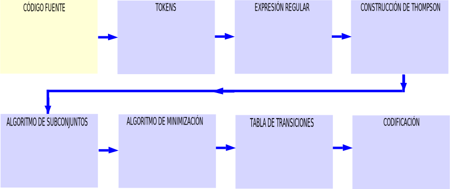
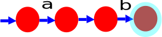
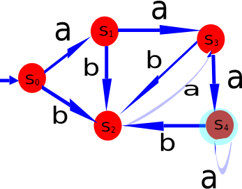

La entrada al escaner es el código fuente: en un lenguaje de alto nivel, representado en el cuadro siguiente:
public class Estudiante {
// code
private String nombre ;
public void setNombre( String estudianteNombre ) {
nombre = estudianteNombre ;
}
public String getNombre( ) {
return nombre ;
}
public static void main( String[ ] s ) {
Estudiante estudiante1 = new Estudiante( ) ;
Estudiante student2 = new Student( ) ;
estudiante1 . setNombre( ” John ” ) ;
estudiante2 . setNombre( ”Mary” ) ;
System . out . println( estudiante1 . getNombre ( ) ) ;
System . out . println( estudianet2 . getNombre ( ) ) ;
}
}
public static void main(String[] args) {
int a;
}
Se marcan los tokens en el código fuente de acuerdo a la tabla UNO.
| NÚMERO | TOKEN |
|---|---|
| 1 | Números: 1, 2, 3, 4, 0.5, 0.6, 0.7, etc. |
| 2 | Identificadores: a, b, c, d, a1, b2, A, A1, etc. |
| 3 | Palabras clave: int, float, main, new, etc. |
| 4 | Operadores: +, -, *, /, etc. |
| 5 | Delimitadores: , , [, ], etc. |
Los tokens reconocidos del código fuente son los siguientes que se muestran en la tabla DOS.
Se escogen las palabras public y class, las cuales son el token palabra reservada. Estas palabras reservadas se convierten en expresión regular. La expresión regular de la palabra reservada, es la misma palabra reservada. Tomando las palabras reservadas public y class, se procede como sigue:
Para aplicar la construcción de Thompson se usan los patrones de Thompson. Para la concatenación, la alternativa y las cerraduras.


Para transformar el AFN de la figura 11b a AFD, se aplica el algoritmo de subconjuntos. Se comienza aplicando la operación de cerr-ε al estado 0, este primer subconjunto de estados será el primer estado del AFD, el que se etiquetará como S0 :
Se comienza aplicando la operación de cerr-ε al estado 0, este primer subconjunto de estados será el primer estado del AFD, el que se etiquetará como S0 : | cerr−ε({0}) = {0, 1, 3, 4, 5, 7} = S0 |
Para obtener el estado S1 se aplica la operación de movimiento para todos los símbolos del alfabeto Σ = {a, b}, lo que se representa como mov(S0, a). También a cada movimiento se le aplica la operación de cerr-ε, lo cual se representa como: cerr-ε(mov(S0, a)). | mov(S0 , a) = {2, 6} |
Se le aplica la operación de cerr-ε al movimiento de S0 con el sı́mbolo a, por lo que se obtiene: | cerr − ε(mov(S0 , a)) = {1, 2, 3, 4, 5, 6, 7, 9, 10} = S1 |
Se hacen las siguientes operaciones: | mov(S0 , b) = {8}cerr − ε(mov(S0 , b)) = {8, 9, 10} = S2 |
Se hacen las siguientes operaciones: | mov(S1 , a) = {2, 6, 11}cerr − ε(mov(S1 , a)) = {1, 2, 3, 4, 5, 6, 7, 9, 10, 11, 12} = S3 |
Se hacen las siguientes operaciones: | mov(S1 , b) = {8}cerr − ε(mov(S1 , b)) = {8, 9, 10} = S2 |
Se hacen las siguientes operaciones: | mov(S2 , a) = {11}cerr − ε(mov(S2 , a)) = {11, 12} = S3 |
Se hacen las siguientes operaciones: | mov(S2 , b) = {} = φcerr − ε(mov(S2 , b)) = {} = φ |
Se hacen las siguientes operaciones: | mov(S3 , a) = {2, 6, 11, 13}cerr − ε(mov(S3 , a)) = {1, 2, 3, 4, 5, 6, 7, 9, 10, 12, 13} = S4 |
Se hacen las siguientes operaciones: | mov(S3 , b) = {8}cerr − ε(mov(S3 , b)) = {8} = S2 |
Se hacen las siguientes operaciones: | mov(S4 , a) = {2, 6, 11, 13}cerr − ε(mov(S4 , a)) = {1, 2, 3, 4, 5, 6, 7, 9, 10, 12, 13} = S 4 |
Se hacen las siguientes operaciones: | mov(S4 , b) = {8}cerr − ε(mov(S4 , b)) = {8, 9, 10} = S2 |
Se hacen las siguientes operaciones: | mov(S5 , a) = {2, 6, 11, 13}cerr − ε(mov(S4 , a)) = {1, 2, 3, 4, 5, 6, 7, 9, 10, 12, 13} = S4 |
Se hacen las siguientes operaciones: | mov(S5 , b) = {8}cerr − ε(mov(S4 , b)) = {8, 9, 10} = S2 |
El siguiente paso es obtener de las operaciones anteriores el AFD, como se muestra en la figura 12 . |

Se forman dos grupos de estados: un grupo de estados no finales; otro grupo de estados finales.
| ESTADOS | a | b |
|---|---|---|
| S0 | S1 | S2 |
| S1 | S3 | S2 |
| S2 | S3 | e |
| S3 | S4 | S2 |
DEFINICIÓN 11 (Consistencia.) Es cuando un par o grupo de estados tienen las mismas transiciones.
Para comprobar la consistencia. Se hace de acuerdo al AFDNo mínimo
| δ[Estados,car] | a | b |
|---|---|---|
| S0 | S1 | S2 |
| S1 | S3 | S2 |
| S2 | S3 | e |
| S3 | S4 | S2 |
| S4 | S4 | S2 |
La función SiguienteCaracter(), se debe de implementar para hacer la lectura del código fuente.

Si se lee la siguiente cadena: abaa. A continución se presenta el siguiente código:
| Estados | Lectura car | δ[Estados,car] |
|---|---|---|
| S0 | S1 | S2 |
| S1 | S3 | S2 |
| S2 | S3 | e |
| S3 | S4 | S2 |
| S4 | S4 | S2 |